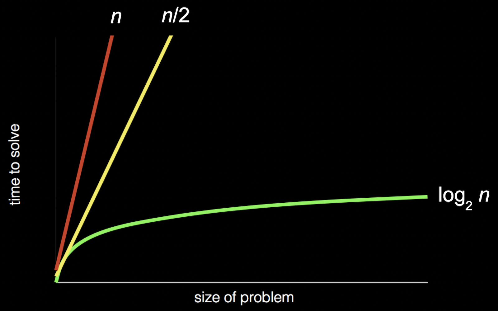
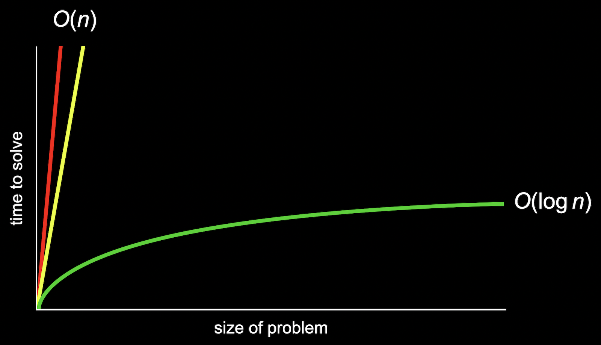
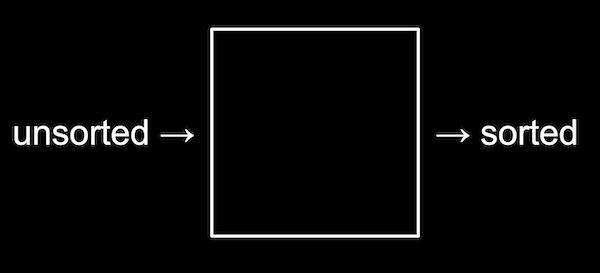

Lecture 3
Last week
- Recall that our purpose for learning a new programming language and other tools is to solve problems. And we solve those problems by creating some output from input:

- We learned about memory, which allows us to store data as bytes, and strings, which are arrays of characters.
Searching
- Today we’ll focus on algorithms that solve problems with arrays.
- It turns out that, with arrays, a computer can’t look at all of the elements at once. Instead, a computer can only to look at them one at a time, though we can look in any order, like only being able to open one locker at a time:

- Recall that arrays are zero-indexed, meaning that the first item has an index of 0. And with
- Recall that arrays are zero-indexed, meaning that the first item has an index of 0. And with
- Searching is how we solve the problem of finding information. A simple problem has an input of some values, and an output of a
bool, whether or not a particular value is in the array.
Big
- Today we’ll look at algorithms for searching. To compare their efficiency, we’ll consider running time, or how long an algorithm takes to run given some size of input.
- Computer scientists tend to describe running time with big
- In week 0, we saw a chart with different types of algorithms and the times they might take to solve a problem:
- Recall that the red line is searching linearly, one page at a time; the yellow line is searching two pages at a time; and the green line is dividing and conquering, starting in the middle and dividing the problem in half each time.
- In the chart above, if we zoomed out and changed the units on our axes, we would see the red and yellow lines end up very close together:
- So we use big
- The green line, though, is fundamentally different in its shape, even as
- So we use big
- We’ll see some common running times:
- Computer scientists might also use big
- We have a similar set of the most common big
- Finally, there is another notation,
- An algorithm with running time of
- Let’s take a look at some algorithms that we can describe with these running times.
Linear search, binary search
- On stage, we have seven lockers with closed doors, with numbers hidden behind them. Since a computer can only look at one element in an array at a time, we can only open one door at a time as well.
- If we want to look for the number zero, for example, we would have to open one door at a time, and if we didn’t know anything about the numbers behind the doors, the simplest algorithm would be going from left to right.
- This algorithm, linear search, would be correct but not very efficient. We might write pseudocode with:
For each door from left to right If number is behind door Return true Return falseReturn falseis outside the for loop, since we only want to do that after we’ve looked behind all the doors.
- We can rewrite our pseudocode to be a little closer to C:
For i from 0 to n-1 If number behind doors[i] Return true Return false- Now, we’re using a variable,
i, to look at each location in an array calleddoors.
- Now, we’re using a variable,
- With
ndoors, we’ll need to look at allnof them. And what we do for each of thendoors, which is looking inside and possibly returningtrue, takes a constant number of steps each time. So the big - The lower bound, big Omega, would be
- If we know that the numbers behind the doors are sorted, then we can start in the middle, and find our value more efficiently since we know we can go left or right, dividing the problem in half each time.
- For binary search, the pseudocode for our algorithm might look like:
If no doors Return false If number behind middle door Return true Else if number < middle door Search left half Else if number > middle door Search right half- We remember to check whether there are no doors left, since that means our number isn’t behind any of them.
- We can write this pseudocode to be more like C:
If no doors Return false If number behind doors[middle] Return true Else if number < doors[middle] Search doors[0] through doors[middle - 1] Else if number > doors[middle] Search doors [middle + 1] through doors[n - 1]- We can determine the index of the middle door with a bit of math, and then we can divide the problem into searching either the doors with indices
0throughmiddle - 1, ormiddle + 1throughn - 1.
- We can determine the index of the middle door with a bit of math, and then we can divide the problem into searching either the doors with indices
- The upper bound for binary search is
- Even though binary search might be much faster than linear search, it requires our array to be sorted first. If we’re planning to search our data many times, it might be worth taking the time to sort it first, so we can use binary search.
- Other resources we might consider beyond the time it takes to run some code include the time it takes to write the code, or the amount of memory required for our code.
Searching with code
- Let’s take a look at
numbers.c:#include <cs50.h> #include <stdio.h> int main(void) { int numbers[] = {4, 6, 8, 2, 7, 5, 0}; for (int i = 0; i < 7; i++) { if (numbers[i] == 0) { printf("Found\n"); return 0; } } printf("Not found\n"); return 1; }- Here we initialize an array with values by using curly braces, and we check the items in the array one at a time, in order, to see if they’re equal to zero.
- If we find the value of zero, we return an exit code of 0 (to indicate success). Otherwise, after our for loop, we call
return 1(to indicate an error code). - This is how we might implement linear search.
- We can compile our program and run it to see that it works:
$ make numbers $ ./numbers Found - And we can change what we’re looking for to
-1, and see that our program doesn’t find it:... if (numbers[i] == -1) ...$ make numbers $ ./numbers Not found
- We can do the same for strings in
names.c:#include <cs50.h> #include <stdio.h> #include <string.h> int main(void) { string names[] = {"Bill", "Charlie", "Fred", "George", "Ginny", "Percy", "Ron"}; for (int i = 0; i < 7; i++) { if (names[i] == "Ron") { printf("Found\n"); return 0; } } printf("Not found\n"); return 1; }- But when we try to compile our program, we get:
$ make names names.c:11:22: error: result of comparison against a string literal is unspecified (use an explicit string comparison function instead) [-Werror,-Wstring-compare] if (names[i] == "Ron") ^ ~~~~~ 1 error generated. make: *** [<builtin>: names] Error 1 - It turns out that we can’t compare strings directly in C, since they’re not a simple data type built into the language, but rather an array of many characters. Luckily, the
stringlibrary has function,strcmp, string compare, which compares strings for us.strcmpreturns a negative value if the first string comes before the second string,0if the strings are the same, and a positive value if the first string comes after the second string. - We’ll change our conditional to
if (strcmp(names[i], "Ron") == 0), so we can check whether our two strings are actually equal. - And if we wrote
if (strcmp(names[i], "Ron")), then any non-zero value, positive or negative, would be consideredtrue, which would be the opposite of what we want.- We could actually write
if (!strcmp(names[i], "Ron"))to invert the value, which would work in this case, but it would be arguably worse design since it doesn’t explicitly check for the value of0as the documentation indicates.
- We could actually write
- But when we try to compile our program, we get:
Structs
- We might want to implement a phone book, with names and phone numbers, in
phonebook0.c:#include <cs50.h> #include <stdio.h> #include <string.h> int main(void) { string names[] = {"Carter", "David"}; string numbers[] = {"+1-617-495-1000", "+1-949-468-2750"}; for (int i = 0; i < 2; i++) { if (strcmp(names[i], "David") == 0) { printf("Found %s\n", numbers[i]); return 0; } } printf("Not found\n"); return 1; }- We have two arrays,
namesandnumbers, and we’ll make sure that each person’s phone number has the same index as their name in each array. - We’ll search our
namesarray for someone’s name, and then return their corresponding phone number at the same index. - This program is correct, but not well-designed since we’ll have to maintain both arrays carefully to make sure that the names and numbers line up.
- And feel free to call or text David for a surprise!
- We have two arrays,
- It turns out in C that we can define our own data type, or data structure. It would be a better design for our program to have some array with a data type
personthat includes both their name and phone number, so we can just sayperson people[];. - In C, we can create a struct with the following syntax:
typedef struct { string name; string number; } person;typedef structtells the compiler that we’re defining our own data structure. Andpersonat the end of the curly braces will be the name of this data structure.- Inside our struct, we’ll have two strings,
nameandnumber. We’ll use strings for phone numbers since they might include punctuation, and other types of numbers, like zip codes, might have a leading 0 that would disappear if treated as a number.
- We’ll use this in
phonebook1.c:#include <cs50.h> #include <stdio.h> #include <string.h> typedef struct { string name; string number; } person; int main(void) { person people[2]; people[0].name = "Carter"; people[0].number = "+1-617-495-1000"; people[1].name = "David"; people[1].number = "+1-949-468-2750"; for (int i = 0; i < 2; i++) { if (strcmp(people[i].name, "David") == 0) { printf("Found %s\n", people[i].number); return 0; } } printf("Not found\n"); return 1; }- We see new syntax to set the values for each variable inside each
personstruct by using the dot operator,.. - In our loop, we can also use
.nameor.numberto access variables in our structs, and be certain that they are from the sameperson.
- We see new syntax to set the values for each variable inside each
- In computer science, encapsulation is the idea that related data is grouped together, and here we’ve encapsulated two pieces of information,
nameandnumberinto the same data structure. The color of a pixel, with red, green, and blue values, might also be well-represented by a data structure as well. - We can also imagine that a struct can be used to store precise decimal values or large integer values, perhaps with arrays that we can use to store large numbers of digits.
Sorting
- Sorting is solving the problem which takes in an unsorted list of numbers as input, and producing an output of a sorted list of numbers:
- For example,
6 3 8 5 2 7 4 1might be input, and output would be1 2 3 4 5 6 7 8.
- For example,
Selection sort demonstration
- We’ll have eight volunteers come up to the stage, in unsorted order:
5 2 7 4 1 6 3 0 - We ask our volunteers to sort themselves, and everyone moves to the correct position:
0 1 2 3 4 5 6 7 - Unfortunately, computers can only look at one number and move one of them at a time, at least with programs we have written so far.
- We’ll start with unsorted numbers again, and going step-by-step, we’ll look for the smallest number first, looking at each number in order:
5 2 7 4 1 6 3 0 ^ - Now, we’ll swap the smallest number with the number at the beginning, since it’s easier than shifting all of the other numbers down:
0 | 2 7 4 1 6 3 5 - Now, our problem has gotten smaller, since we know at least the beginning of our list is sorted. So we can repeat what we did, starting from the second number in the list:
0 | 2 7 4 1 6 3 5 ^ 0 | 1 7 4 2 6 3 51is the smallest number now, so we’ll swap it with the second number.
- We’ll repeat this again …
0 1 | 7 4 2 6 3 5 ^ 0 1 | 2 4 7 6 3 5 - … and again …
0 1 2 | 4 7 6 3 5 ^ 0 1 2 | 3 7 6 4 5 - … and again …
0 1 2 3 | 7 6 4 5 ^ 0 1 2 3 | 4 6 7 5 - … and again …
0 1 2 3 4 | 6 7 5 ^ 0 1 2 3 4 | 5 7 6 - … and again, until we’ve swapped the last number in our list:
0 1 2 3 4 5 | 7 6 ^ 0 1 2 3 4 5 | 6 7
Bubble sort demonstration
- We’ll start with our unsorted list, but this time we’ll look at pairs of numbers and swap them if they are out of order:
5 2 7 4 1 6 3 0 ^ ^ 2 5 7 4 1 6 3 0 ^ ^ 2 5 7 4 1 6 3 0 ^ ^ 2 5 4 7 1 6 3 0 ^ ^ 2 5 4 1 7 6 3 0 ^ ^ 2 5 4 1 6 7 3 0 ^ ^ 2 5 4 1 6 3 7 0 ^ ^ 2 5 4 1 6 3 0 7- Now, the highest number is all the way to the right, so we’ve improved our problem.
- We’ll repeat this again:
2 5 4 1 6 3 0 | 7 ^ ^ 2 5 4 1 6 3 0 | 7 ^ ^ 2 4 5 1 6 3 0 | 7 ^ ^ 2 4 1 5 6 3 0 | 7 ^ ^ 2 4 1 5 6 3 0 | 7 ^ ^ 2 4 1 5 3 6 0 | 7 ^ ^ 2 4 1 5 3 0 6 | 7- Now the two biggest values are on the right.
- We’ll repeat again …
2 4 1 5 3 0 | 6 7 ^ ^ 2 4 1 5 3 0 | 6 7 ^ ^ 2 1 4 5 3 0 | 6 7 ^ ^ 2 1 4 5 3 0 | 6 7 ^ ^ 2 1 4 3 5 0 | 6 7 ^ ^ 2 1 4 3 0 5 | 6 7 - … and again …
2 1 4 3 0 | 5 6 7 ^ ^ 1 2 4 3 0 | 5 6 7 ^ ^ 1 2 3 4 0 | 5 6 7 ^ ^ 1 2 3 4 0 | 5 6 7 ^ ^ 1 2 3 0 4 | 5 6 7 - … and again …
1 2 3 0 | 4 5 6 7 ^ ^ 1 2 3 0 | 4 5 6 7 ^ ^ 1 2 3 0 | 4 5 6 7 ^ ^ 1 2 0 3 | 4 5 6 7 - … and again …
1 2 0 | 3 4 5 6 7 ^ ^ 1 2 0 | 3 4 5 6 7 ^ ^ 1 0 2 | 3 4 5 6 7 - … and finally:
1 0 | 2 3 4 5 6 7 ^ ^ 0 1 | 2 3 4 5 6 7 - Notice that, as we go through our list, we know more and more of it becomes sorted, so we only need to look at the pairs of numbers that haven’t been sorted yet.
Selection sort
- The first algorithm we saw is called selection sort, and we might write pseudocode like:
For i from 0 to n–1 Find smallest number between numbers[i] and numbers[n-1] Swap smallest number with numbers[i]- We need to sort all
nnumbers in our list, so we’ll have a loop withito keep track of how many numbers we’ve sorted so far. - The first step in the loop is to look for the smallest number in the unsorted part of the list, from index
iton-1. - Then, we swap the smallest number we found with the number at index
i, which makes everything up toisorted. - And we’ll repeat this until the entire list is sorted, from left to right, as
igoes from0ton-1.
- We need to sort all
- For this algorithm, we started with looking at all
- We can use some math formulas to get to
- We can use some math formulas to get to
- In the best case, where the list is already sorted, our selection sort algorithm will still look at all the numbers and repeat the loop, so it has a lower bound for running time of
Bubble sort
- The pseudocode for bubble sort might look like:
Repeat n-1 times For i from 0 to n–2 If numbers[i] and numbers[i+1] out of order Swap them- Since we are comparing each pair of numbers at
iandi+1, we only need to go up ton–2fori. - Then, we swap the two numbers if they’re out of order.
- We need to repeat this
n-1times since each time we go over the list, only one number moves all the way to the right.
- Since we are comparing each pair of numbers at
- To determine the running time for bubble sort, we have
- The largest factor is again
- If we add a little logic to our algorithm, we can optimize the running time in the best case:
Repeat n-1 times For i from 0 to n–2 If numbers[i] and numbers[i+1] out of order Swap them If no swaps Quit- If we looked at all the numbers, and didn’t make any swaps, then we know that our list has been sorted.
- The lower bound for running time of bubble sort would be
- We look at a visualization with animations for how numbers are moved for selection sort and bubble sort.
Recursion
- Recursion is the ability for a function to call itself. We haven’t seen this in code yet, but we’ve seen this in pseudocode for binary search:
If no doors Return false If number behind middle door Return true Else if number < middle door Search left half Else if number > middle door Search right half- We’re using the same “search” algorithm for each half. This seems like a cyclical process that will never end, but we’re actually changing the input to the function and dividing the problem in half each time, stopping once there are no more doors left.
- Our pseudocode from week 0 used “go back” to repeat some steps, like a loop:
1 Pick up phone book 2 Open to middle of phone book 3 Look at page 4 If person is on page 5 Call person 6 Else if person is earlier in book 7 Open to middle of left half of book 8 Go back to line 3 9 Else if person is later in book 10 Open to middle of right half of book 11 Go back to line 3 12 Else 13 Quit
- But we can similarly have our algorithm use itself after it divides the problem:
1 Pick up phone book 2 Open to middle of phone book 3 Look at page 4 If person is on page 5 Call person 6 Else if person is earlier in book 7 Search left half of book 8 Else if person is later in book 9 Search right half of book 10 Else 11 Quit
- In week 1, too, we implemented a “pyramid” of blocks in the following shape:
# ## ### #### - Our code to print this out might look like:
#include <cs50.h> #include <stdio.h> void draw(int n); int main(void) { int height = get_int("Height: "); draw(height); } void draw(int n) { for (int i = 0; i < n; i++) { for (int j = 0; j < i + 1; j++) { printf("#"); } printf("\n"); } }- We have a
drawfunction which takes in an argument,n, and uses a loop to printnrows with more and more bricks in each row. - We can run our code and see that it works:
$ make iteration $ ./iteration Height: 4 # ## ### ####
- We have a
- But notice that a pyramid of height 4 is actually a pyramid of height 3 with an extra row of 4 blocks added on. And a pyramid of height 3 is a pyramid of height 2 with an extra row of 3 blocks. A pyramid of height 2 is a pyramid of height 1 with an extra row of 2 blocks. And finally, a pyramid of height 1 is a pyramid of height 0 (no blocks) with a row of 1 block added.
- Since a pyramid is a recursive structure, we can write a recursive function to draw a pyramid, a function that calls itself to draw a smaller pyramid before adding another row:
#include <cs50.h> #include <stdio.h> void draw(int n); int main(void) { int height = get_int("Height: "); draw(height); } void draw(int n) { if (n <= 0) { return; } draw(n - 1); for (int i = 0; i < n; i++) { printf("#"); } printf("\n"); }- We can rewrite our
drawfunction to use itself. - If
nis0(or negative somehow) we’ll stop without printing anything. And we need to make sure we stop for some base case, so our function doesn’t call itself over and over forever. - Otherwise, we’ll call
drawagain, to print a pyramid of sizen - 1first. - Then, we’ll print the row of blocks we need for our pyramid, of size
n. - We can run our code and see that it works:
$ make recursion $ ./recursion Height: 4 # ## ### ####
- We can rewrite our
- We can change our conditional to
if (n == 0), and type in a negative number to see what happens:$ make recursion $ ./recursion Height: -100 Segmentation fault (core dumped)- A segmentation fault means that we’ve touched memory in our computer that we shouldn’t have, and this happened since our function has called itself over and over so many times and ended up using too much memory.
Merge sort
- We can take the idea of recusion to sorting, with another algorithm called merge sort. The pseudocode might look like:
If only one number Quit Else Sort left half of number Sort right half of number Merge sorted halves - Our strategy will be sorting each half, and then merge them together. Let’s start with two sorted halves that look like:
2 4 5 7 | 0 1 3 6- We’ll look at just the first number in each list, and move the smaller,
0, into the start of a new list. Then we can look at the next number in the list:2 4 5 7 | 0 1 3 6 ^ ^ 2 4 5 7 | 1 3 6 ^ ^ 0 - We’ll move the next smallest number,
1, down, and look at the next number in that list:2 4 5 7 | 3 6 ^ ^ 0 1 - This time, the
2is the next smallest, so we’ll move that down, and repeat this process:4 5 7 | 3 6 ^ ^ 0 1 2 4 5 7 | 6 ^ ^ 0 1 2 3 5 7 | 6 ^ ^ 0 1 2 3 4 7 | 6 ^ ^ 0 1 2 3 4 5 7 | ^ 0 1 2 3 4 5 6 | 0 1 2 3 4 5 6 7
- We’ll look at just the first number in each list, and move the smaller,
- So this is how we would merge two sorted halves together.
- We’ll start at the beginning now with an entirely unsorted list of numbers:
5 2 7 4 1 6 3 0- We start by looking at the first half, which is a list of size 4:
5 2 7 4- We’ll have to sort the left half, which is a list of size 2:
5 2- The left half is size 1, so we’re done, and the right half is also size 1, so we can merge both halves together:
2 5
- The left half is size 1, so we’re done, and the right half is also size 1, so we can merge both halves together:
- Now we’ll need to sort the right half:
7 4- Again, we’ll merge both of these halves together, by taking the smallest element from each list
4 7
- Again, we’ll merge both of these halves together, by taking the smallest element from each list
- Now we’ve sorted both halves, each of size 2, and can merge them together:
2 5 | 4 7 ^ ^ 5 | 4 7 ^ ^ 2 5 | 7 ^ ^ 2 4 | 7 ^ 2 4 5 2 4 5 7
- We’ll have to sort the left half, which is a list of size 2:
- We’ll repeat this for the right half, another list of size 4:
1 6 3 0- Sorting the left half gives us
1 6, and the right half merges to0 3. - We’ll merge those with:
1 6 | 0 3 ^ ^ 1 6 | 3 ^ ^ 0 6 | 3 ^ ^ 0 1 6 | ^ 0 1 3 0 1 3 6
- Sorting the left half gives us
- Now, we have two sorted halves,
2 4 5 7and0 1 3 6, which we can merge together as we saw above.
- We start by looking at the first half, which is a list of size 4:
- Every time we merged two halves, we only needed to look at each number once. And we divided our list of 8 numbers three times, or
- The lower bound of our merge sort is still
- We look at a final visualization of sorting algorithms with a larger number of inputs, running at the same time.